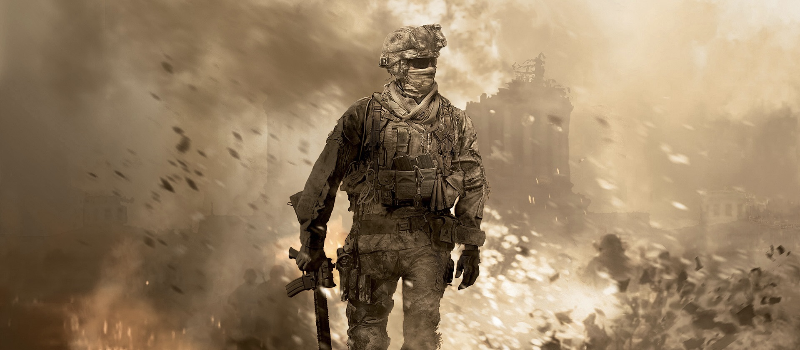

First Game: Call of Duty
Date: October 29 2003
Latest Game: Call of Duty: Black Ops 7
Date: November 14 2025
Developer: Infinity Ward, Treyarch
Publisher: Activision
Genre: First‑Person Shooter, Action, Military
Overview of Call of Duty
The Call of Duty series began in 2003 with WWII shooters and quickly grew into a massive FPS franchise. It shifted to modern conflict with Modern Warfare (2007), expanded into Cold War and futuristic themes through the Black Ops games, and experimented with sci‑fi and historical returns. The rebooted Modern Warfare trilogy (2019–2023) refreshed the series again, followed by new Black Ops titles like BO6 (2024) and BO7 (2025). Across two decades, it evolved from simple war campaigns into huge, cinematic, interconnected universes.
Golden Age (2007-2012)
The Call of Duty franchise reached its undisputed peak between 2007 and 2012. This era delivered some of the most iconic FPS titles ever made, revolutionizing multiplayer gaming and defining a generation of players. With unforgettable campaigns, legendary characters, and groundbreaking online modes, this period is widely regarded as the franchise’s Golden Age.
Peak Games
- Call of Duty 4: Modern Warfare (2007) – The game that changed FPS forever.
- Modern Warfare 2 (2009) – Peak hype, peak multiplayer, peak chaos.
- Black Ops II (2012) – Fan‑favorite branching campaign and elite multiplayer.
Why This Era Was the Peak
- Unmatched multiplayer innovation
- Legendary maps (Terminal, Nuketown, Rust, Raid)
- Iconic characters (Soap, Ghost, Price, Mason, Woods)
- Massive cultural impact on YouTube and early esports
- Perfect balance of fun, chaos, and competitive play
Legacy
Even today, players look back at this era as the golden standard of Call of Duty. Modern Warfare (2007), MW2 (2009), and Black Ops II (2012) continue to influence modern FPS design, and their remasters and reboots show how deeply they shaped gaming culture.
Sources
- Activision Official Franchise Timeline
- GameSpot – Call of Duty Retrospective
- IGN – Modern Warfare & Black Ops Coverage